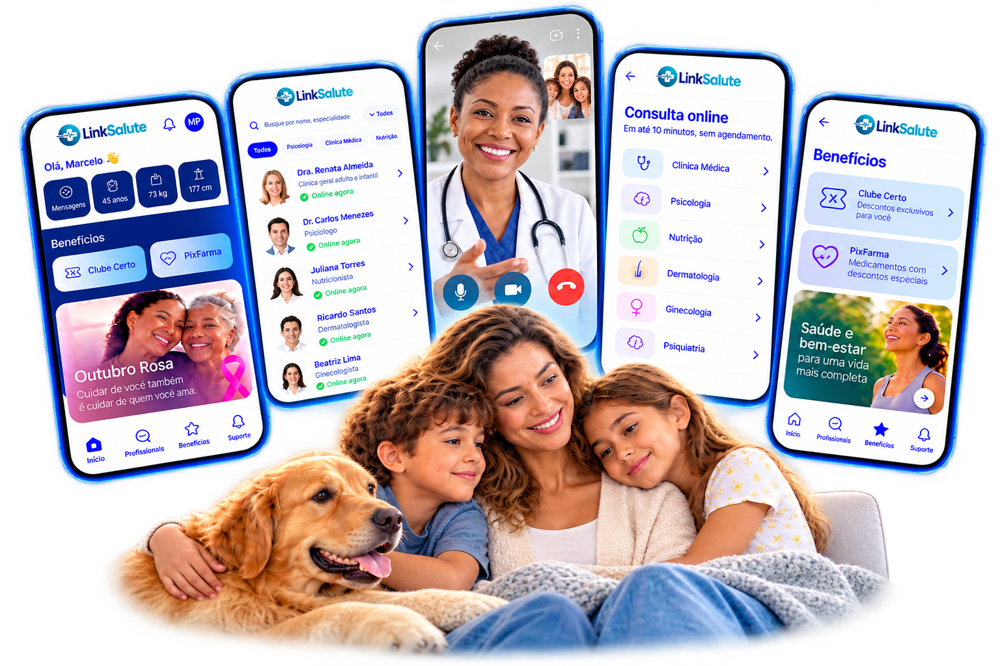
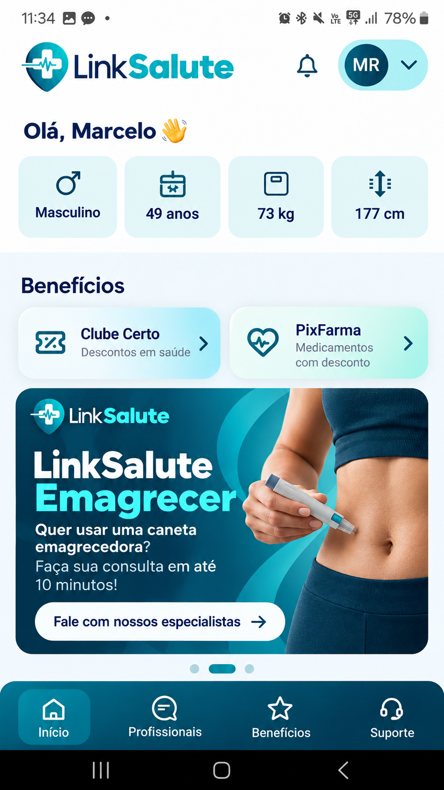

de satisfação em uma experiência que combina acolhimento, agilidade e confiança.
Saúde digital com presença real
Saúde e benefícios em um único aplicativo.
Um ecossistema digital criado para aproximar cuidado, conveniência e vantagens na sua rotina.
TelemedicinaBenefíciosConveniência

Telemedicina
Satisfação no atendimento
92%
Alta resolutividade
Até 90%
01
02
03
04
Cuidado onde você estiver.
A LinkSalute aproxima você do acesso à saúde por meio de uma experiência digital simples e conveniente. Você conta com atendimento humanizado de médicos e profissionais de saúde altamente qualificados.
das demandas de pronto atendimento podem ser resolvidas com efetividade pela telemedicina, tornando o cuidado mais simples, rápido e seguro.
Sem deslocamento
Acesse o cuidado de onde estiver.
Sem longas filas
Tenha uma jornada mais ágil e objetiva.
Mais proteção
Reduza sua exposição a ambientes com alta circulação de doenças.
Mais comodidade
Integre o atendimento à sua rotina.
“Quando o cuidado vem até você, o acesso à saúde se torna mais simples, rápido e seguro.
Conexão com o cuidadoonde você estiver
Ecossistema de benefícios
Cuidado quando necessário. Benefícios no seu dia a dia.
A LinkSalute continua fazendo parte da sua rotina mesmo quando você não precisa de atendimento médico.
Um aplicativo que continua entregando valor mesmo sem a necessidade de atendimento médico.

Cashback
Vantagens que retornam valor para a sua rotina.
Descontos
Economia em diferentes momentos do seu dia.
Vale-presentes
Mais possibilidades dentro do mesmo ecossistema.
Cinema
Experiências e conveniência além do cuidado em saúde.
Para quem é a LinkSalute
Encontre a LinkSalute no seu contexto.
Veja como a LinkSalute pode gerar valor para sua empresa, sua entidade ou sua base — com mais acesso, conveniência e percepção de cuidado.
Clientes B2B
Cuidado que fortalece sua empresa, sustenta a produtividade e é percebido pelos seus colaboradores.
Com a LinkSalute, você combina telemedicina, conveniência e benefícios em uma experiência simples, escalável e de alto valor percebido — com reflexos positivos na rotina, no clima organizacional e na atratividade do seu pacote de benefícios.
Visão estratégicaSaúde bem entregue influencia produtividade, retenção e continuidade operacional.
Quando o cuidado é fácil de acessar, sua empresa reduz atritos do dia a dia, fortalece a percepção de valor do benefício e cria uma cultura de cuidado mais visível para seus colaboradores.
Seu colaborador acessa cuidado com mais agilidade e menos ruptura na rotina, preservando foco, tempo e continuidade operacional.
Menos deslocamentos e menos tempo desperdiçado com filas ajudam a reduzir ausências e simplificam a jornada de cuidado.
Quando o colaborador percebe acolhimento real, a relação com o benefício muda e a sensação de cuidado se fortalece.
Você entrega um benefício útil, fácil de comunicar e com alto valor percebido para diferentes perfis de colaboradores.
Gestão & evidências
Além da experiência do colaborador, sua gestão ganha mais visibilidade e organização.
Mais acompanhamento e rastreabilidade para apoiar sua rotina de gestão.
Informação organizada para qualificar o acompanhamento da jornada de cuidado.
Mais segurança operacional em uma solução pensada para escalar com simplicidade.
Um benefício que ajuda a fortalecer vínculo, pertencimento e confiança na sua empresa.
92% de satisfação no atendimentoUma experiência de cuidado acolhedora, ágil e confiável — com potencial de resolver até 90% das demandas de pronto atendimento por telemedicina.
Conselhos Profissionais
Faça sua entidade estar mais presente na rotina dos seus associados.
Leve saúde, conveniência e benefícios para seus associados, familiares e escritórios e transforme sua entrega institucional em uma experiência útil, recorrente e fácil de perceber.
Valor institucionalQuando o benefício é útil no momento certo, sua entidade ganha proximidade.
A LinkSalute ajuda você a transformar relacionamento institucional em uma entrega concreta para a categoria.
Reforce sua atuação com uma entrega que vai além da comunicação e chega à rotina do associado.
Reduza barreiras de distância e conveniência com uma jornada digital simples.
Amplie a percepção de utilidade da sua entidade com saúde e vantagens em um único ecossistema.
Crie uma proposta relevante para associados, familiares e escritórios vinculados à sua categoria.
Sindicatos
Entregue um benefício que sua base reconhece quando precisa.
Amplie o acesso ao cuidado e fortaleça a percepção de entrega do seu sindicato com uma solução simples de comunicar, conveniente de usar e relevante no dia a dia.
Entrega para a baseBenefício bom é aquele que seu representado reconhece no uso.
Menos barreira de distância, mais conveniência e uma proposta concreta para fortalecer sua relação com a base.
Facilite a chegada ao cuidado sem depender de deslocamentos desnecessários.
Entregue uma experiência digital simples que se adapta à rotina dos seus representados.
Transforme o benefício em algo tangível e fácil de reconhecer no dia a dia.
Conte com uma solução que agrega saúde e vantagens sem complicar sua comunicação institucional.
Associações
Transforme seu clube de vantagens em uma experiência de cuidado e valor.
Combine saúde, conveniência e benefícios em uma única jornada e torne sua associação mais relevante para seus associados no momento em que eles realmente precisam.
Experiência do associadoQuanto mais útil é sua entrega, maior é o valor percebido da associação.
A LinkSalute adiciona cuidado, conveniência e vantagens ao relacionamento que você já construiu com sua base.
Fortaleça sua proposta de valor com uma solução que combina saúde e benefícios.
Ofereça uma experiência prática e digital que continua entregando valor além do atendimento médico.
Amplie a percepção de utilidade e cuidado associada à sua marca institucional.
Crie novos motivos para seu associado reconhecer e utilizar os benefícios da sua associação.
Parceiros Comerciais
Transforme relacionamento em oportunidade comercial.
Apresente a LinkSalute à sua rede e conte com nosso apoio para transformar boas conexões em uma Carteira Mensal de Performance.
Apresente oportunidades da sua rede empresarial ou institucional.
A LinkSalute participa da apresentação, proposta e apoio ao fechamento.
Os clientes originados passam a compor sua Carteira Mensal de Performance conforme as regras do programa.
Seja um parceiro LinkSalute
Transforme relacionamento em uma oportunidade recorrente.
Se você já se relaciona com empresas, clientes ou entidades, a LinkSalute pode transformar sua rede em uma nova frente comercial com apoio em apresentação, proposta e fechamento.
Sua rede já tem valor. A LinkSalute ajuda você a transformar relacionamento em oportunidade.
Modelo recorrenteConstrua suaCarteira Mensal
de PerformanceCada oportunidade apresentada pode evoluir para uma carteira comercial construída ao longo do tempo, com acompanhamento comercial e visão de longo prazo.
de PerformanceCada oportunidade apresentada pode evoluir para uma carteira comercial construída ao longo do tempo, com acompanhamento comercial e visão de longo prazo.
Você abre a porta certa
Apresente a LinkSalute para empresas ou entidades com aderência ao nosso modelo.
Nós estruturamos a oportunidade
Entramos com apresentação, materiais, proposta e apoio em toda a jornada comercial.
Você desenvolve sua Carteira Mensal de Performance
Cada cliente originado fortalece uma carteira recorrente construída com mais previsibilidade.
LinkSalute
Saúde digital com presença real.
Leve mais cuidado, conveniência e benefícios para sua rotina, seus colaboradores ou sua base.
Uma solução premium com preço de escala corporativa.